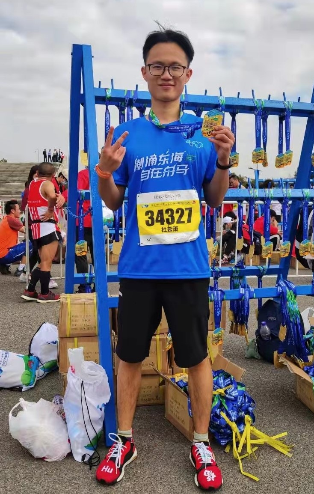

|
Yunxiao Du (杜云箫)
I am a second-year master student at Zhejiang University Dilab advised by Ke Chen,
Lidan Shou and Dawei Jiang. Before that, I received my B.Eng. in 2020 from Nanchang University where I was advised by Zichen Xu.
Email /
Blog /
Github /
Google Scholar
|

|
|
Research
|
|
I am interested in distributed systems, especially consensus protocols. In the past, I have been trying to design a cloud native consensus protocol to auto scala out and reduce the service cost. My current research focus is designing a new LSMT storage engine based on persistent memory to better support distributed relational databases.
|
|
Publications
|
Cost-effective Strong Consistency on Scalable Geo-diverse Data Replicas
Yunxiao Du*, Zichen Xu, Kanqi Zhang, et al. IEEE Transactions on Cloud Computing 2022
In this paper , I designed a cloud native raft protocol (BW-Raft) to improve the scalability of original raft and save service costs by using spot instance.
|
|
Projects
|
LazyStore: A Range Query Workload Adaptive Key-Value Store based on Hybrid Memory Index [WIP]
In this project, I designed Lazytree a hybrid memory index to better support distributed database based on Silkstore . This project is currently being advised and collaborated by Xinjing Zhou .
|
|
ByteDance
Applied Research Center-Storage
2022.5 - Present, Beijing, China
Working on TerarkDB's Link Compaction project.
In this project, I am mainly responsible for designing and implementing Link Compaction under the guidance of mentor and other colleagues.
|
|
Teaching Assistant for Operating System in ZJU (Fall 2021)
|
|